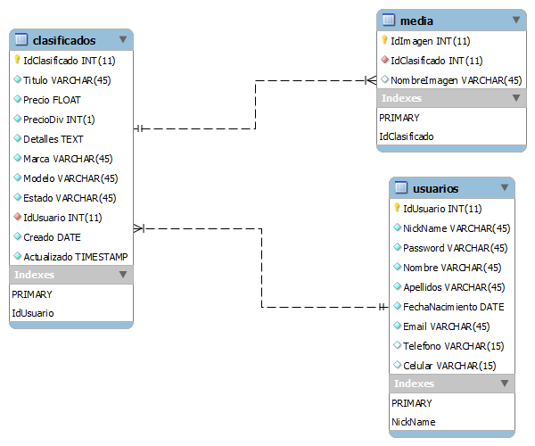

El siguiente es el esquema de la base de datos de VendeloYa

Bienvenido a la API
API: Interfaz de programación de aplicaciones (API, Application Programming Interface) es el conjunto de funciones y procedimientos (o métodos, en la programación orientada a objetos) que ofrece cierta biblioteca para ser utilizado por otro software como una capa de abstracción. Son usadas generalmente en las bibliotecas.